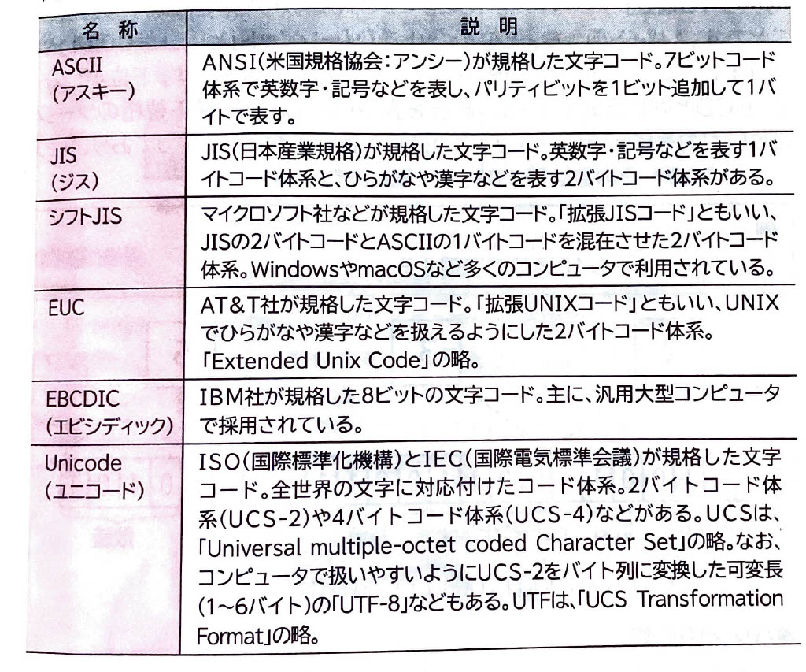

【 文字の表現 】
表示
コンピュータでは、通常使用する文字を2進数の情報で識別します。コンピュータは内部に
｢文字コード表｣
と呼ばれる表があり、コンピュータで使用する文字を2進数の表現で対応付けています。米国ではすべての文字を1バイトで構成するのに対し、日本では米国で使用されているアルファベットや数値のほかに、ひらがな・カタカナ・漢字・記号など数多くの文字種を常用するため、文字を2バイトでコード化しています。代表的な文字コードには、次のようなものがあります。
